6-місячна програма акселерації та executive-навчання для оборонних компаній і компаній подвійного призначення, які рухаються зі швидкістю стартапу та готові масштабуватися на ринки США, Європи та Азійсько-Тихоокеанського регіону.
Проводиться разом із SRI International у Кремнієвій долині, з прямим доступом до DIU, NATO та екосистеми VALOR з її азійсько-тихоокеанським напрямом.
Резиденція в Кремнієвій долині: 8–20 березня 2027
Перша хвиля заявок: до 14 листопада · Фінальний дедлайн: 15 грудня
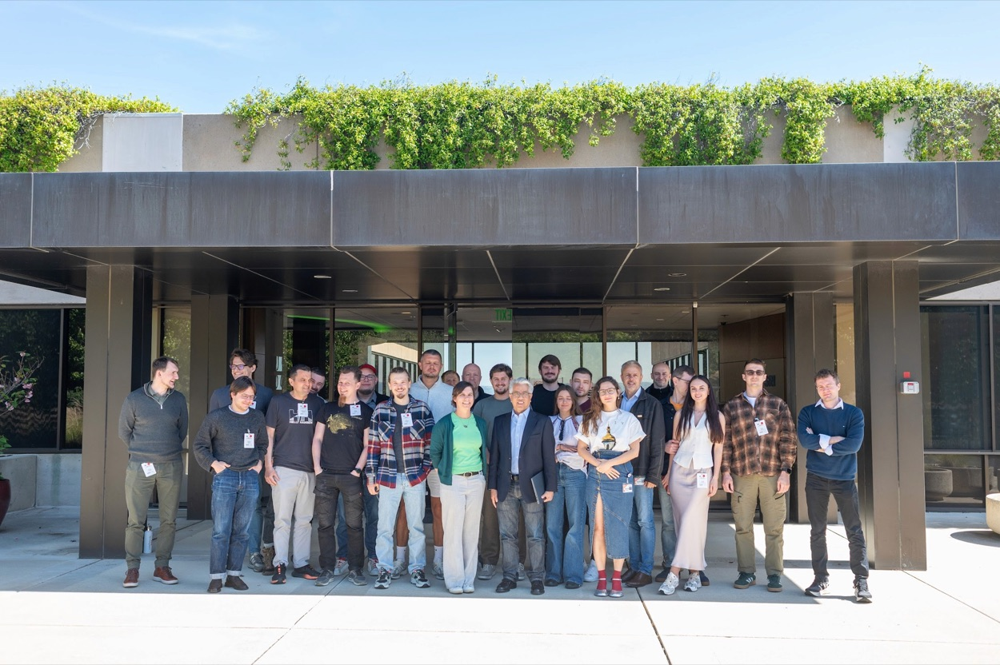
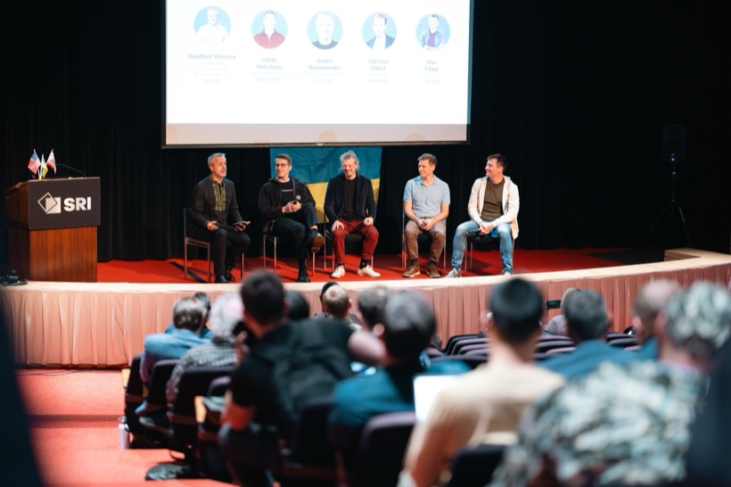
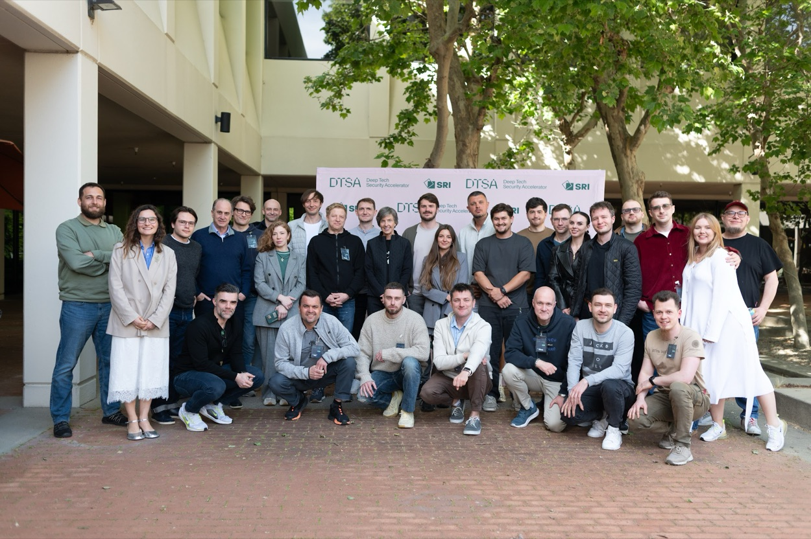
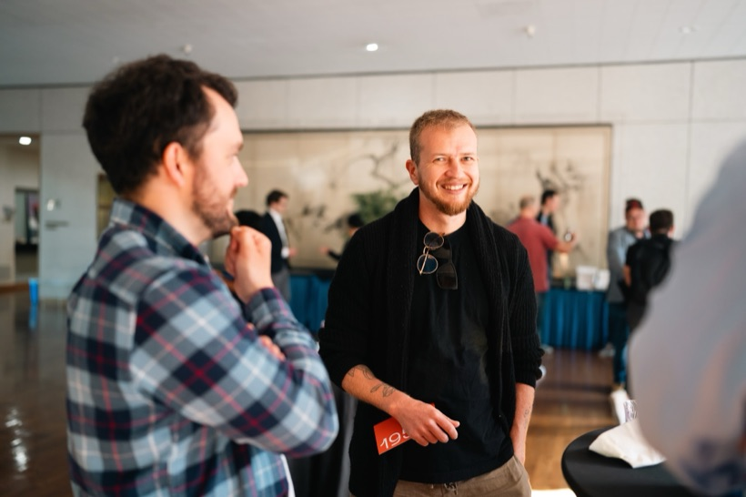
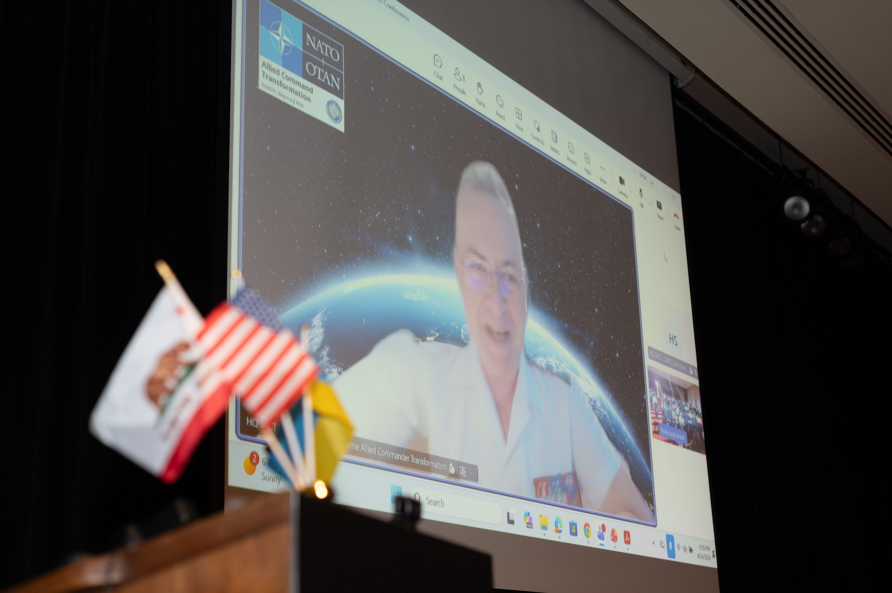
DTSA працює з компаніями різного рівня зрілості. Оберіть напрям, який підходить саме вам.
Компанії рівня TRL 6+, які є українськими, заснованими українцями або мають українську операційну команду. Можливо, ви вже продаєте на міжнародних ринках. Тепер ви хочете зрозуміти ринок США та побудувати систему, щоб перемагати на ньому.
У вас 500+ людей і перевірені продукти. Вам не потрібні основи. Вам потрібен доступ і лідери, готові до нових ринків. TAF Drones, Swarmer, Moodro, Zaruba та LOGICS 7 вже пройшли DTSA.
Оборонні компанії, які прагнуть співпрацювати з українською оборонною екосистемою. Сильні компанії подвійного призначення у сферах ШІ, громадської безпеки, пожежогасіння, охорони здоров’я та медтеху чи govtech, які хочуть створити або посилити оборонне застосування своїх технологій, навіть якщо ще не мають бойового досвіду.
Приєднатися до DTSA означає увійти в екосистему, а не лише пройти програму. Кожна компанія отримує доступ до мережі та ініціатив, які ми реалізуємо у США та за їх межами.
Швидкий вхід до однієї з провідних оборонних дослідницьких установ США, яка приймає нашу резиденцію в Кремнієвій долині.
Прямі розмови з DIU, DARPA, NATO, фахівцями з ITAR та іншими ключовими стейкхолдерами, які формують оборонні інновації, закупівлі та регулювання у США й Альянсі.
Шляхи до урядів, міністерств оборони та провідних дослідницьких установ Азійсько-Тихоокеанського регіону, де покупці шукають перевірені компанії, щоб купувати в них, партнеритися та спільно розробляти рішення.
Дізнатися про екосистему VALOR →Закрита мережа дослідницьких установ і представників урядів країн-союзників. Учасники мають більше шансів отримати пропозиції щодо спільних R&D, починаючи з SRI.
Наші випускники співпрацюють одне з одним, щоб покращувати свої продукти та розвивати свої компанії. Вони спільно розробляють нові продукти й разом проводять тестування. Капітал і контракти приходять услід.
Дивіться найкращі моменти першої когорти та слухайте команди, які пройшли програму, з перших уст.
Дізнайтеся, як засновники зміцнили свою презентацію, партнерства та залучення інвестицій завдяки DTSA
Наші випускники →Ми запрошуємо як суто оборонні компанії, так і компанії подвійного призначення. Ваші швидкість, інноваційність і гнучкість важать більше, ніж розмір.
Ми працюємо з командами, які вирішують критично важливі задачі у сферах:
Ми прискорюємо компанії, які вже будують, а не ті, що лише уявляють. Стежте за нами та залишайтеся на зв’язку.
Позиціонування, зустрічі з партнерами та доступ до екосистеми високого рівня довіри, спільно з SRI International.
Стратегія, наратив, GTM, переговори, експортний контроль і лідерство для засновників і команд керівників — з урахуванням реалій оборонного сектору та подвійного призначення.
Структурований доступ до праймів, оборонних інвесторів, урядів, операторів, менторів і R&D-партнерів.
Наша комплексна програма світового рівня розроблена для вирішення унікальних викликів, з якими стикаються оборонні компанії та компанії подвійного призначення.
Онлайн-програма, зосереджена на підготовці пітчу та онбордингу, щоб ви прибули на резиденцію й етап виконання повністю готовими.
Очне занурення в роботу: тренінги, майстер-класи, куровані зустрічі та доступ до екосистеми для прискорення виходу на ринок.
Постійна підтримка з боку експертів-менторів, супровід у комунікації з партнерами й інвесторами та відстеження ключових етапів для ефективного масштабування.
Шість напрямів, які проходитимуть під час Резиденції в Кремнієвій долині, 8–20 березня 2027.
Інноваційна культура Кремнієвої долини, фреймворк цінності NABC від SRI та Lean Startup.
Комерціалізація технологій, продажі та стратегія виходу на ринок США з використанням ШІ.
Мислити як венчурний інвестор: фандрейзинг, готовність до раунду Series A, IP та юридичні питання, практика пітчів.
Agile-прототипування, ШІ, автономні системи, системи візуалізації та технологічний скаутинг з експертами SRI.
Державні контракти, ITAR і сесії з NATO, DARPA, DIU та праймами.
Командна динаміка, переговори, управління змінами, лідерство та прогнозування майбутнього.
DTSA розроблена для лідерів, які ухвалюють стратегічні рішення та можуть повноцінно залучитися до програми.
Засновник, співзасновник, CEO, CTO або керівник напряму стратегії чи розвитку бізнесу.
Ваші топ-керівники. Для них DTSA працює як програма executive-навчання, зосереджена на лідерстві, мисленні, партнерствах і навичках, необхідних для успіху на ринку США.
Учасник має бути здатним представляти технологію та її підтвердження, спілкуватися з інвесторами й праймами та ухвалювати стратегічні рішення під час і після програми. Якщо учасник не може ухвалювати рішення, програма не принесе повної цінності.
Повністю покривається Українським фондом випускників. Учасники самостійно оплачують лише проїзд і проживання.
Запрошуємо до участі за умови внеску до Фонду випускників. Учасники самостійно оплачують проїзд і проживання.
Вартість програми за запитом. Учасники самостійно оплачують проїзд і проживання.
Тому що цінність — у доступі, а не в основах. Серед наших випускників є великі зрілі компанії, зокрема TAF Drones, Swarmer, Moodro, Zaruba та LOGICS 7. Вони приєдналися, щоб і далі впроваджувати інновації та посилювати свою міжнародну присутність.
Через DTSA ви отримуєте швидкий вхід до SRI International, прямий доступ до DIU та NATO, а також інтеграцію в екосистему VALOR з її азійсько-тихоокеанським напрямом. Учасники нашої закритої мережі також мають більше шансів отримати пропозиції щодо спільних R&D від SRI, інших провідних дослідницьких установ і представників урядів країн-союзників. Ваші топ-керівники можуть долучитися до програми як до executive-навчання.
І на те, і на інше. Ми зосереджені на виконанні: готовності до закупівель, виході на ринок, партнерствах і масштабуванні. Але правильного виконання не буває без постійного навчання.
У DTSA ви навчаєтеся в найкращих: у засновників, які мають не один екзит, в інвесторів, які активно інвестують в оборонні технології та технології подвійного призначення, у менторів і викладачів, а також у тих, хто створив багатомільярдні світові компанії.
Резиденція DTSA в Кремнієвій долині покликана дати вам чітке розуміння того, як працює оборонний ринок США, як у ньому орієнтуватися та як позиціонувати свою компанію для успішної інтеграції в американську оборонну екосистему.
Протягом програми ми об’єднуємо провідних експертів, практиків галузі, інвесторів та осіб, що ухвалюють рішення, які можуть поділитися знаннями та досвідом з перших вуст.
Під час резиденції у вас буде можливість зустріти:
Окрім експертних сесій, програма включає Демо-день та нетворкінг-заходи.
На нашому Демо-дні ми запрошуємо інвесторів, міжнародні делегації, представників уряду та інших ключових стейкхолдерів, щоб вони могли ознайомитися з компаніями-учасницями та дослідити потенційні можливості для співпраці.
Завдяки нашим нетворкінг-заходам ви зможете налагодити зв’язки з місцевою екосистемою Кремнієвої долини, розширити свою професійну мережу та розвинути стосунки, які можуть перерости в майбутнє партнерство.
Не менш важливо, що DTSA будує довірливе середовище в кожній когорті. Ви проведете два тижні поруч із видатними засновниками та колегами-новаторами в оборонній сфері, обмінюючись досвідом, обговорюючи виклики, навчаючись одне в одного та вибудовуючи стосунки, які виходять далеко за межі резиденції.
Ні, DTSA не бере жодної частки в капіталі компаній-учасниць.
DTSA була заснована на початку повномасштабного вторгнення в Україну як місійно орієнтована ініціатива, що допомагає українським оборонним компаніям інтегруватися в екосистему Кремнієвої долини та вийти на ринок США.
Спочатку програма була розроблена виключно для українських компаній. Відтоді ми розширили нашу місію і тепер також приймаємо міжнародні команди, які зацікавлені у співпраці з українськими оборонними інноваторами та розглядають ринок США як можливість масштабувати свій бізнес.
Наша відданість підтримці української оборонної інновації залишається незмінною, тому внесок за участь скасовано для українських компаній.
Після першої когорти ми заснували Фонд випускників DTSA, який дозволяє компаніям-випускницям добровільно робити внески, щоб підтримати майбутні когорти та створити подібні можливості для наступного покоління оборонних інноваторів.
Ці внески є повністю добровільними і не вимагаються для участі.
Наша команда має глибоку експертизу в технологіях, обороні та побудові венчурних проєктів, підтримуючи засновників знаннями та досвідом для швидкого й правильного розвитку.
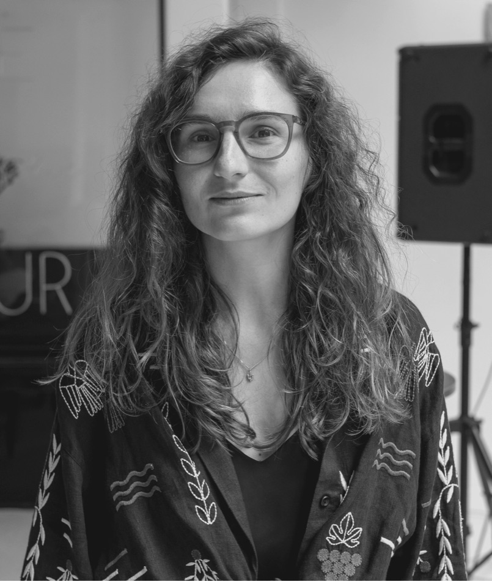
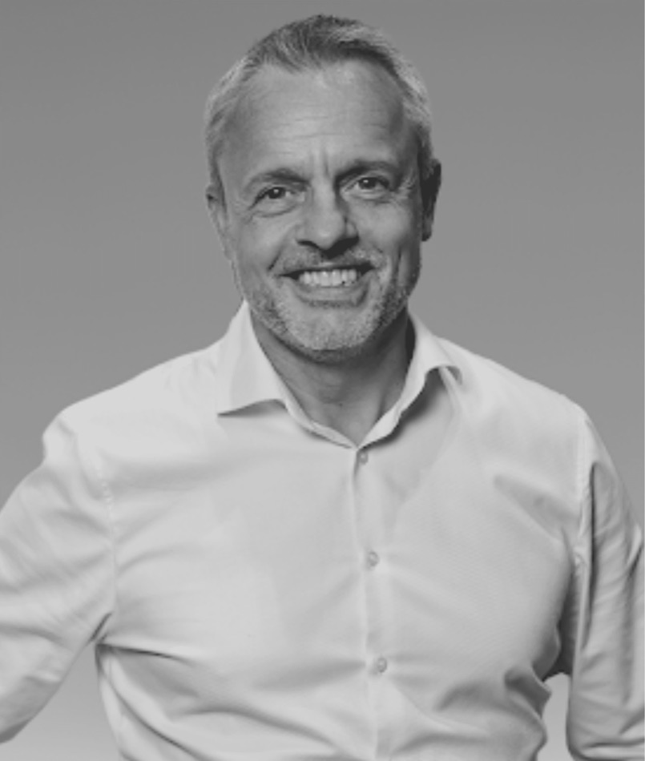
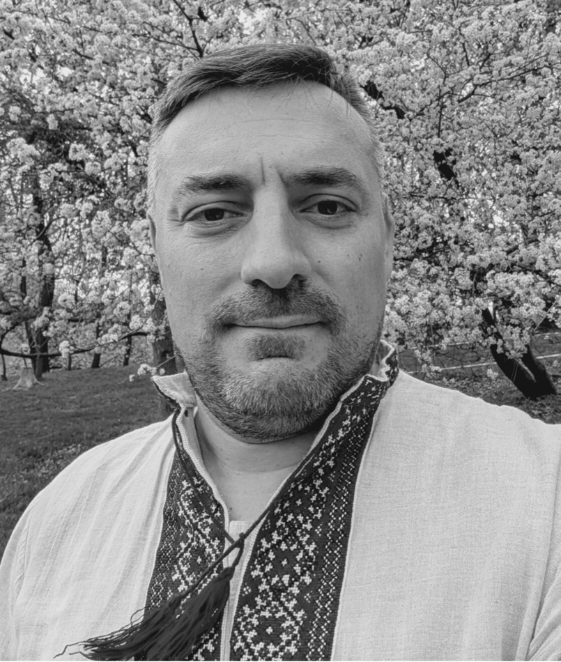
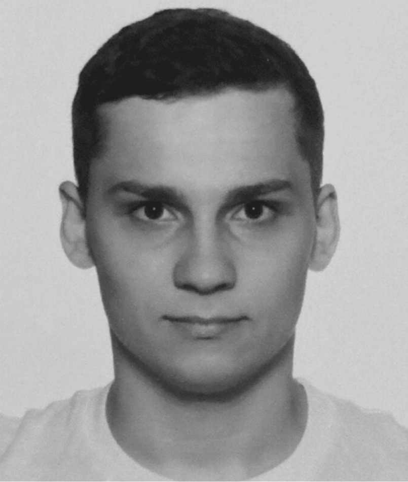
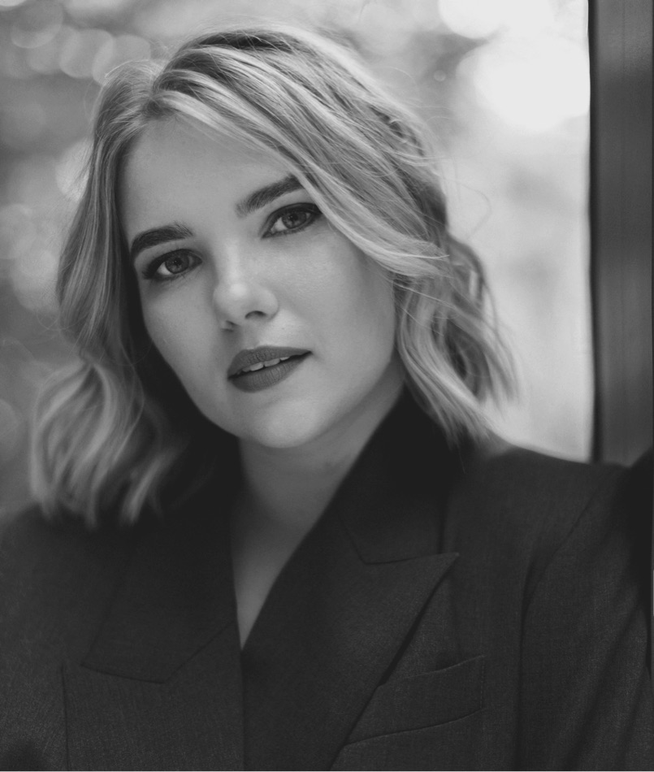
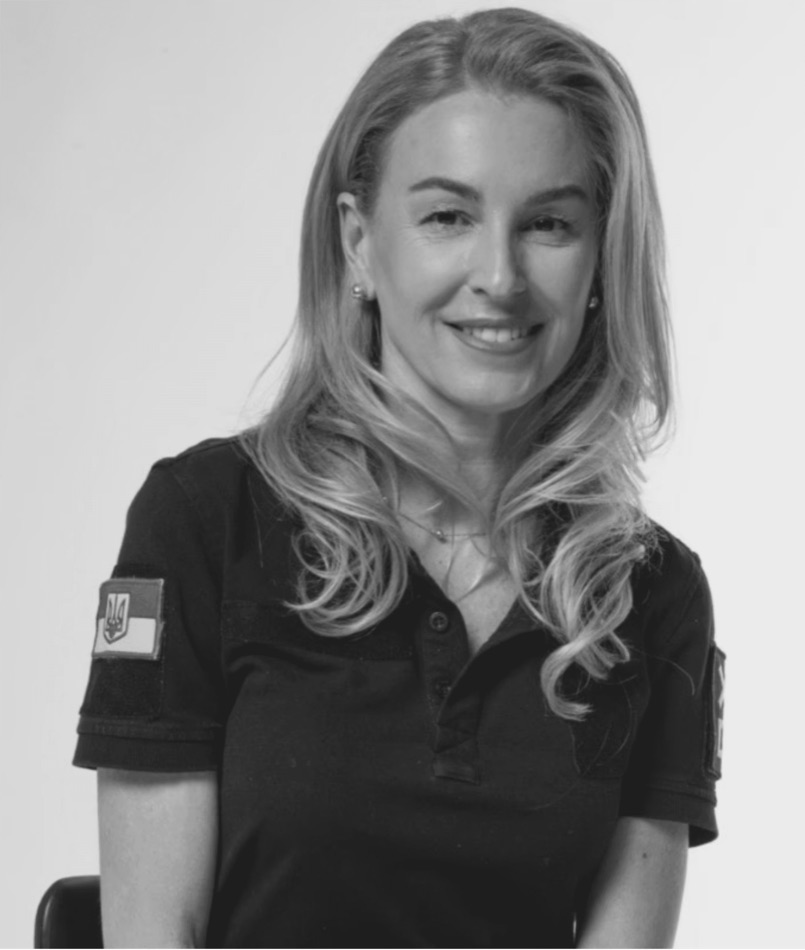
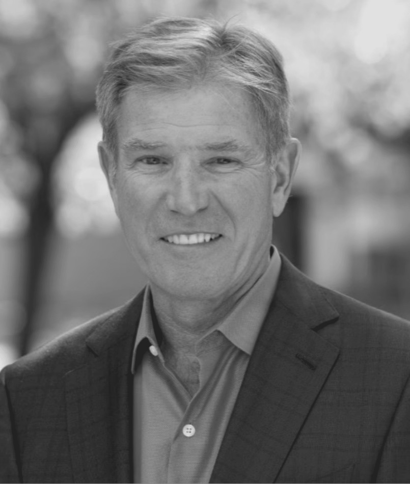
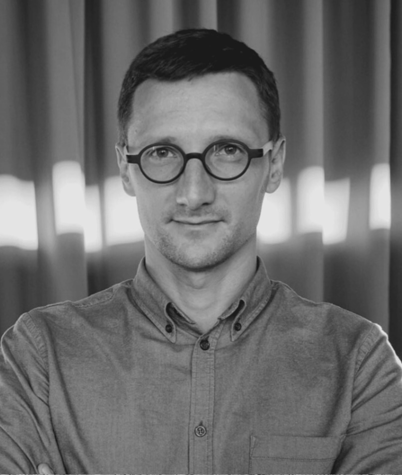
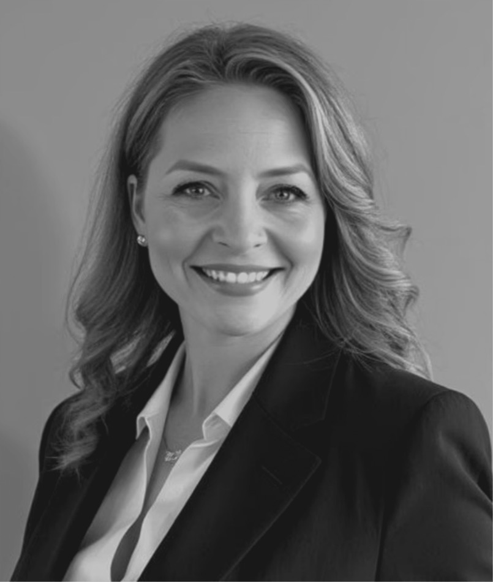
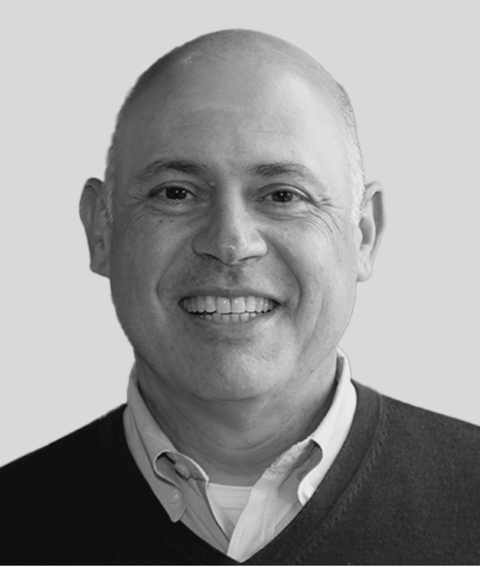
Перевірені в бою або готові стати компанією подвійного призначення, рухаєтеся зі швидкістю стартапу та готові масштабуватися? DTSA — ваш вхід в оборонну екосистему США.